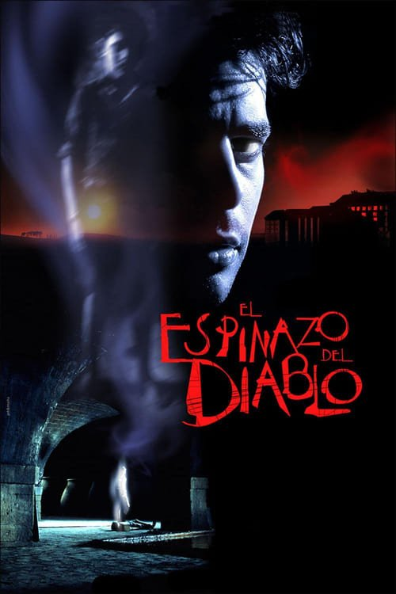

El espinazo del diablo (2001)
Sinopsis Rápida
En un orfanato español devastado por la Guerra Civil, un grupo de niños huérfanos se enfrenta a un terror sobrenatural que amenaza con destruirlos a todos. ¿Son sus miedos reales o el producto de una mente traumatizada?
Sinopsis Detallada
Ambientada en un orfanato durante la posguerra española, "El espinazo del diablo" sigue a un grupo de niños que descubren una presencia maligna en su hogar aparentemente seguro. La película teje una atmósfera opresiva y profundamente inquietante, explorando temas de trauma infantil, la pérdida y la crueldad de la guerra. El director Guillermo del Toro crea una obra maestra visual, mezclando elementos fantásticos con realismo crudo para crear una experiencia cinematográfica inolvidable. El misterio que rodea a la aparición fantasmal y su conexión con los acontecimientos de la guerra, añaden capas de complejidad y suspenso.
¿Por qué tenés que verla?
- Una atmósfera tensa y absorbente que te dejará sin aliento.
- La dirección magistral de Guillermo del Toro y su increíble diseño de producción.
- Su impacto duradero en el género de terror y su exploración de temas universales.
- Una historia conmovedora sobre la infancia perdida en medio de un conflicto.
Idea Extra
Análisis del simbolismo en "El espinazo del diablo": Un recorrido por los significados ocultos de la arquitectura, los fantasmas y los objetos.